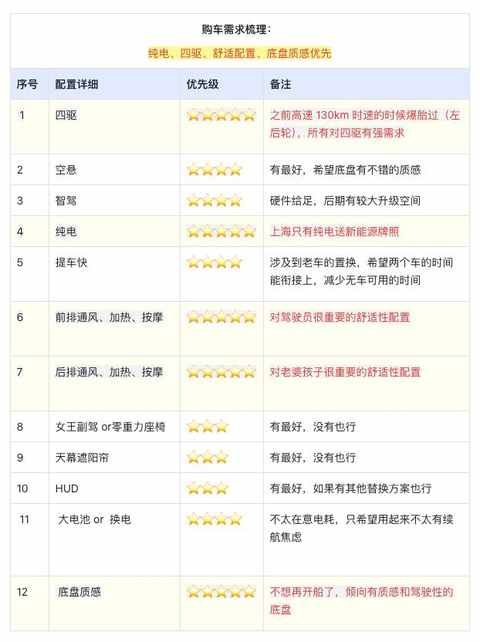
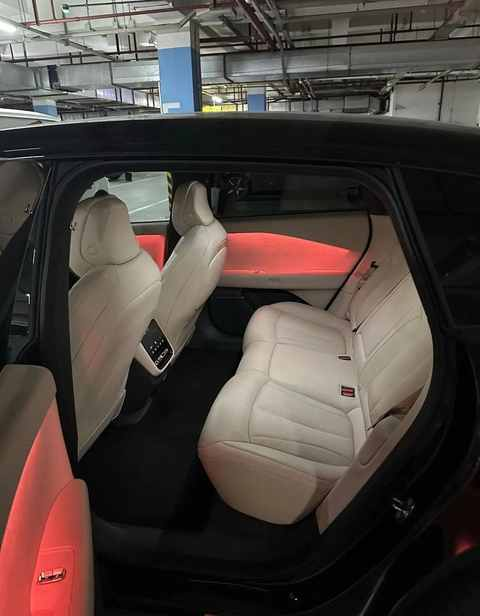
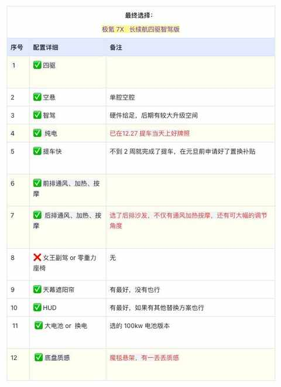
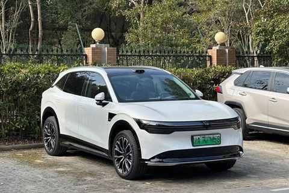
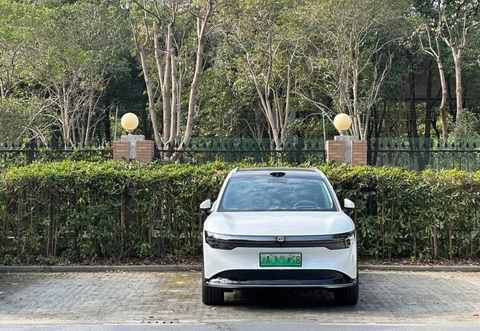
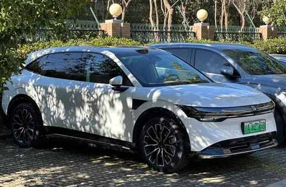

前比亚迪车主，聊聊近两年试驾的 11 款自主品牌纯电车：小鹏、蔚来、极氪……
最近两年多，试驾 11 款纯电车，均为自主品牌车型，在这 11 款车中：小鹏旗下有 3 款、蔚来旗下有 3 款、极氪汽车有 2 款。

每次试驾，都有助于对自身和家庭用车需求的理解：

随着试驾车型的增多，需求会从模糊到清晰，再到逐步明确。
通过试驾，总结出 5 个试驾的 tips：
1️⃣ 试驾不是必须到店，可预约上门试驾
2️⃣ 即便是同一款车，两驱 和 四驱很可能感受大不一样
3️⃣ 走自己常开的路线能更好的感知车在驾驶中的表现
4️⃣ 先坐后排试乘后试驾体验，后排的乘坐体验很重要
5️⃣ 一定要尽量多试驾多体验，别只看网络上的图与视频
在每次试驾之后会根据当时的第一印象写试驾感受，以下内容均为当时试驾之后的记录，很主观且只针对当时试驾的车型：
小鹏 P7+
试驾时间：2024/12/04

1️⃣ 直观感受是：
空间大，用料足，配置全
2️⃣ 试驾路线可自定义：
主要是走了日常行驶多的路线，开了 40 多分钟，主要是自己开，体验了不到 3km 的智驾
3️⃣ 销售重点提及的有三个点：
①现在预定交车需两个月，暂时没有免息但支持零首付
② 标配智驾，可终身使用，无需额外付费
③ 智驾采取纯视觉方案，无激光雷达
4️⃣ 主观驾驶感受：
由于开过的车太少，目前的车又太老，导致很难对开起来好的感受有一个准确的定义
试了舒适模式、标准模式、运动模式，动力响应都挺好，舒适取向明显，适合家用
5️⃣ 体验好的地方：
① 空间大且实用，不是傻大个的感觉，特别是后排空间 和 后备箱的容积
② 虽然是 5m 的车，但开起来没有笨重感，方向盘指向清晰
③ 智驾使用便捷，怀档向下拨动一下即可，也有对应的语音提醒
智界 R7
试驾时间：2024/10/10
整体满意度不错，满分十分能给到 8 分。
💡试乘➕试驾一起大概 50 分钟，没有明显体验不好的地方，各种道路都有不错的表现，后排的舒适度很好
1️⃣ 考虑到想对比的更明显一点，是开车去的，驱车 40km，来回就是 80km，回来的 40km 开的就不得劲了
2️⃣ 目前的试驾车偏少，他们店的两台都是 Ultra 版本也就是顶配版，是白色的，没有选 21 寸轮毂配的是标配的 20 寸
3️⃣ 和销售了解了下，选 Max 版本的最多
4️⃣ Ultra 版本是适时四驱，单腔空悬及 100 度电池
5️⃣ 试了 3 个驾驶模式：舒适、运动、运动+，一家人一起出行可能舒适模式最合适，一个人开车的话运动或者运动+都行，运动+模式会显得更急躁一点点，需要适应适应
6️⃣ 座椅按摩的力度有开到最大，感知上会比放在电影院的按摩椅力度小一些
7️⃣ 先试乘后试驾，可能是工作日上午的原因，销售表示：路线可自定义，时间也不限制
8️⃣ 鸿蒙智行有两款车是卧龙凤雏：问界 M5 和 智界 S7，希望 R7 能大卖
乐道 L60
试驾时间：2024/09/20
结论前置：
很适合家用，无明显短板整体比我现在的车（2015 年款的比亚迪唐）感受和体验上提升太多了，包含但不限于下面几点：
① hud
② 智驾和大屏及语音助手
③ 更舒适的底盘
④ 更好看的内饰和空间
1️⃣ 车子很容易上手，销售和我的身高类似，没有调试座椅和后视镜就直接开了，大概开了 12km，40min
2️⃣ 路线是和销售沟通自定义的，走的去老婆公司的路，然后在绕到地铁站旁边返程，大概走了一遍常开的路段，能和开自己车子的时候有一个对应
3️⃣ 可能是后驱版本的原因，运动模式下急加速和过减速带的时候颠簸比较明显，如果换成舒适模式会好一些，感受上底盘很舒适没那么出彩但肯定也够用，后续会再试试四驱版本
4️⃣ 和我对接的销售之前就是蔚来的，试驾完返回商场他还遇到了蔚来的销售，明显很熟悉😁
腾势 Z9GT
试驾时间：2024/09/14
整体感受挺好，有想拥有的欲望，满分 10 分能给到：8.5 分
1️⃣ 先说于我而言可能是缺点的地方：后备箱不够大，如果是一家三口出行能带的行李有限。
2️⃣ 后排空间超大，二郎腿无负担
3️⃣ 驾驶感受相较现在的比亚迪唐是升级太多了，开起来完全不像接近 5.2m 的车
4️⃣ 掉头的时候能感受到后轮所带来的转弯半径的变小
5️⃣ 内饰的审美偏中年人取向，但做工是在水准之上，触感上会偏硬
极越 01、极氪 001
试驾时间：2024/04/02
🚩先试驾的：极越 01
两驱基础版本销售先展示了自动出车库，然后他先开了 20 分钟左右，重点展示了一些自动驾驶方面的功能和语音操控车辆及超大屏幕的使用试驾车是半幅的方向盘，自己开的时候适应了下，感受上还行，不难操控
🚩后试驾的：极氪 001
四驱顶配版从车库出发就是我在开，走了一个常走的路线，尝试了多个模式，空悬确实不错，但是刹车的最后一下会稍有突兀
小鹏 G9
试驾时间：2023/10/07
着实不错
一定要给一个评分的话 至少是⭐️⭐️⭐️⭐️的水准
📌从个人感受来说， 小鹏 的服务和驾驶体验都比蔚来ES6 更优
1️⃣ 销售直接开车上门试驾，在约定时间之前就已经在小区门口等，试驾车是 G9 的 570max，选装了空气悬架的版本
2️⃣ 上半年试驾P7i 也是这位销售，去的时候拿了一本书送给他，是《详谈：杨浩涌》，也简单说了赠送这本书的缘由，然后就直接开启了本次试驾，销售也直接说能按照自己熟悉的路线开
3️⃣ 正式切换成 D 档之前，特别仔细的调整了座椅调节的情况，实在是国庆的自驾让我的腰和屁股都受到了不够人体工学的偏硬座椅的伤害
4️⃣ 把坐姿调整到了最低，要腰部和腿部的支持都充足，非常接近轿车的坐姿，也比较惊讶居然能调整到如此低，相比蔚来ES6 的最低坐姿估计还能再低 5-8cm
5️⃣ 由于上次试驾 P7i 的时候已经体验过小鹏自动驾驶的相关功能，这次就没有继续体验，主要走的路线就是从小区到老婆公司门口的一段路，全程大概13km，也是平时开的比较多的路段，耗时 30 多分钟
6️⃣ 驾驶模式前半程选的标准，后半程选的运动，，还是比较准确的，标准模式更平缓，适合带娃或全家一起出行的时候用，运动模式适合和朋友一起或者自己一个人的时候用，主观取向上更喜欢运动模式
7️⃣ 前排两个座椅都是自带通风，按摩的，后排都没有，试驾完去展厅体验了后排，空间不错，是应有的水平，长途乘坐体验未知，短途应该还行，比较诧异的是没有自带的小桌板更没有彩电冰箱了，长途带娃出行可能还是没有那么方便
8️⃣ 不知道是不是选装了空气悬架的原因，刹车的脚感挺好，我用开比亚迪的习惯踩刹车也没有出现点头的情况，真心好评，刹车的调教直接影响到后排乘员的乘坐体验
9️⃣ 越试驾越有立马换车的想法，不只是给自己更好的驾驶体验，给家人更好的乘坐体验，也能支持下国产新势力，不过理性的声音明显更强大，这个声音告诉说：不好意思，请先赚够钱！那就先下载 app，把车型放到心愿单吧
🔟 虽然不是也并不能马上换车，但已经提上日程也已经在准备中，车型多，选车难是客观的，但围绕的中心点依然是亘古不变的：个人需求和家庭需求的综合
蔚来 ES6
试驾时间：2023/08/23
还没反应过来就结束了😂
ℹ️ 时间太短且路线固定不灵活，对体验车子的诸多方面和功能影响挺大，可能和小鹏的上门试驾不太一样，之前试驾小鹏大概是开了接近 20km 且路线自定
🚩试驾评分给个及格分6分吧，无惊喜无过错。
💡以下为试驾后的随想：
1️⃣ 是在商场的地下车库由蔚来的工作人员把车开到一个固定位置交换位置的，路途中工作人员介绍了车子的一些特性
2️⃣ 关于后排和后备箱的介绍，几乎没有，还是下车之后我主动去后排坐了下感受了座椅调整到我开车位置的具体情况
3️⃣ 关于nop，工作人员没有主动让我，开启，对比小鹏的工作人员是会主动说明让试驾人员去体验是有显著差别，我主动唤醒Nomi开启nop之后没几秒我就刹车了，就听到了退出nop的提示😓，主动询问工作人员才知道刹车了就会退出，不踩刹车就会自动跟车等等，另外nop+是无法在城市道路体验的，必须是高架或者高速
4️⃣ 自动泊车还可以，不比自己停车慢，但是工作人员说晚了，本来我是准备自己停车先试试的，直接是自动停了，主要是想试试看接近2m的车宽的suv停起来如何
5️⃣ 试驾完到店了之后，重点询问了选配的情况，例如卡钳，女王座驾等，不得不说选配的细节还挺多的，如果预算充足当然是选上更好，不过询问完之后就去掉了几个不太必要的
6️⃣ 驾驶模式刚开始设置的是舒适模式，开起来还行，后面调整成了运动+，用这个模式激烈驾驶绝对是能把后排开吐的那种，油门响应超级灵敏，不太有线性的感觉
7️⃣ 刚到店的时候扫码做了试驾登记，没带驾照丝毫不影响试驾，登记方式是微信扫码填写信息，也给到了一瓶水，刚上车的时候坐副驾驶就顺便就放在了车门的储物格里面，然后下车的时候我和工作人员都忘了这瓶水
8️⃣ 有一说一，做工用料审美真的不错，至少是很符合我的审美和预期，质感拿捏的很好
9️⃣ 特地问了关于提车时间，得到的回复是多款车型都在 4-6 周的时间能提车，说已经过了产能爬坡的阶段
小鹏 P7i
试驾时间：2023/05/12
开了比亚迪唐 2015 款六年的车主，试驾小鹏 P7i 的体会和感受
1️⃣为什么会去试驾小鹏 P7i，原因有三：
① 看了一些宣传参数配置还不错
② 对新能源车之类的比较感兴趣，我的老车实在是辣鸡，毫无可玩性
③ 昨天送娃去辅导班，有一个家长最近提车了，他给了二维码，就直接扫码了，他有积分拿
2️⃣ 试驾流程怎么样的？
① 扫码之后很快就有销售电话过来了，添加微信之后很忙确认了试驾时间是中午一点，也就是我午饭后，说是可以提供上门试驾的服务
② 完成了之后就收到了短信，点击短信里面的链接填写了相关资料
③ 果真是上门试驾，出了小区门就看到了车子打着双闪停在门口，工作人员验证驾照+扫码查看试驾协议并签字即可，试驾车是四驱的 610max
3️⃣ 上车后有哪些感受？
① 无边框车门，但是是单层玻璃，上车的时候我就问了，工作人员表示 P7 就是单层玻璃但是隔音效果不错就保持了
② 刚开始是试乘，坐副驾听工作人员讲解并演示一些特色功能，例如辅助驾驶，语音，导航等
③ 开了一圈之后，就是我来开车，比较惊奇的是方向盘是手动调节，而电动，对女性来说不是特别友好，需要一些力气，调整起来没有电动方向盘方便
④ 座椅是包裹性好评，用料充足，直接调整到最低视野依然是很好，本人身高是 177cm，调整好之后，我特地坐到了后排，空间尚可，高速长途可能会累
4️⃣ 开起来怎么样？
① 刚开始用的标准模式，肯定是偏运动取向，我用开 suv 是习惯开有点蹿蹿的，按道理不至于，后面换了舒适模式，又有点过于舒适，最后换成运动模式，觉得味道对了
② 郊区车不多，隔音降噪感觉不到太多，还 ok，中间压到白线也有预警的声音提醒，但第一次听有点突兀，方向盘震动伴随着声音提醒
③刹车好评，踩了几次之后就会觉得靠谱，动力回收也完全可以快速适应和接受
④ 方向盘的下半部分是类似椭圆的，开了半个多小时还没有适应，转弯和调头的时候会稍微慢点，方向盘自动回正的感觉有点慢
🚩试驾总结：
全流程的感受能给到 80 分，上门试驾真的方便，驾驶上等空了再看看邻居两驱版本的。
蔚来 ET5
试驾时间：2022/10/28
距离上次试驾也过去了五年多
1️⃣用的默认的舒适模式，界面显示百公里加速7.9s
2️⃣坐姿确实偏高，介于轿车和suv之间的一个，高度
3️⃣仪表盘偏低，对驾驶的时候看速度有影响，需要适应适应
4️⃣个人感受来说，刹车和油门刚踩下之后的反应有点突兀，刹车来的太快，油门来的有点慢
5️⃣真的没有比较好的放手机支架的地方
6️⃣皮革的方向盘有点硬，不是真皮有点软的感觉
7️⃣停车的时间才发现车子比较宽，一问才知道差几厘米就到2m
8️⃣服务没得说，比传统4s店会好不少
9️⃣内饰和外观的审美真不错
最终选择的车型为：
极氪 7X



